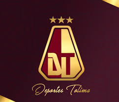

 El Deportes Tolima es uno de los clubes más representativos y constantes del fútbol profesional colombiano. Fundado en la ciudad de Ibagué, capital musical de Colombia, el equipo ha construido una identidad sólida basada en el trabajo disciplinado, el compromiso deportivo y una profunda conexión con su afición. A lo largo de los años, el club ha logrado posicionarse como un rival respetado en la liga nacional, destacándose por su regularidad y por su estilo de juego ordenado y competitivo. Desde sus inicios, el Deportes Tolima continúa escribiendo su historia con cada temporada. Su proyecto deportivo sigue fortaleciéndose, su afición se mantiene fiel y su identidad permanece intacta. Más allá de los resultados, el club representa un ejemplo de constancia, organización y pasión por el fútbol. Para la ciudad de Ibagué y para toda la región, el Deportes Tolima no es solo un equipo, sino un símbolo de pertenencia, esfuerzo y orgullo regional.
El Deportes Tolima es uno de los clubes más representativos y constantes del fútbol profesional colombiano. Fundado en la ciudad de Ibagué, capital musical de Colombia, el equipo ha construido una identidad sólida basada en el trabajo disciplinado, el compromiso deportivo y una profunda conexión con su afición. A lo largo de los años, el club ha logrado posicionarse como un rival respetado en la liga nacional, destacándose por su regularidad y por su estilo de juego ordenado y competitivo. Desde sus inicios, a historia del Deportes Tolima